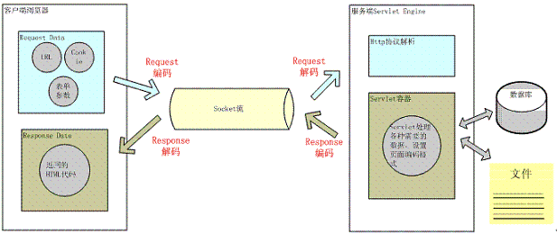
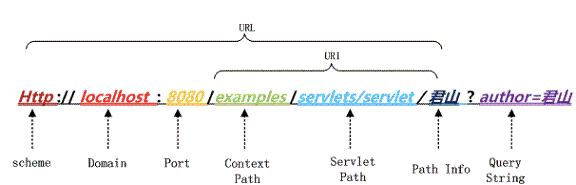
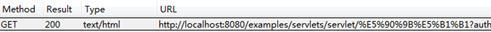

目录
如果你是一个生活在2003年的程序员，却不了解字符、字符集、编码和Unicode这些基础知识。那你可要小心了，要是被我抓到你，我会让你在潜水艇里剥六个月洋葱来惩罚你。 --来源网络
上个世纪60年代，美国制定了一套字符编码，对英语字符与二进制位之间的关系，做了统一规定。这被称为ASCII码，一直沿用至今。ASCII码一共规定了128个字符的编码，比如空格"SPACE"是32（二进制00100000），大写的字母A是65（二进制01000001）。这128个符号（包括32个不能打印出来的控制符号），只占用了一个字节的后面7位，最前面的1位统一规定为0。0~31 是控制字符如换行回车删除等，32~126 是打印字符，可以通过键盘输入并且能够显示出来。
英语用128个符号编码就够了，但是用来表示其他语言，128个符号是不够的。比如，在法语中，字母上方有注音符号，它就无法用ASCII码表示。于是，一些欧洲国家就决定，利用字节中闲置的最高位编入新的符号。比如，法语中的é的编码为130（二进制10000010）。这样一来，这些欧洲国家使用的编码体系，可以表示最多256个符号。
但是，这里又出现了新的问题。不同的国家有不同的字母，因此，哪怕它们都使用256个符号的编码方式，代表的字母却不一样。比如，130在法语编码中代表了é，在希伯来语编码中却代表了字母Gimel (ג)，在俄语编码中又会代表另一个符号。但是不管怎样，所有这些编码方式中，0—127表示的符号是一样的，不一样的只是128—255的这一段。
至于亚洲国家的文字，使用的符号就更多了，汉字就多达10万左右。一个字节只能表示256种符号，肯定是不够的，就必须使用多个字节表达一个符号。比如，简体中文常见的编码方式是GB2312，使用两个字节表示一个汉字，所以理论上最多可以表示65536个符号。
可以想象，如果有一种编码，将世界上所有的符号都纳入其中。每一个符号都给予一个独一无二的编码，那么就不会出现上面的问题。Unicode编码就是这样一种编码。
Unicode是一个很大的字符集合，现在的规模可以容纳100多万个符号。每个符号的编码都不一样，比如，U+0639表示阿拉伯字母Ain，U+0041表示英语的大写字母A，U+4E25表示汉字“严”。
需要注意的是，Unicode只是一个符号集，它只规定了符号的二进制代码，却没有规定这个二进制代码应该如何存储。这就造成了两个问题：
记住，Unicode只是一个用来映射字符和数字的标准。它对支持字符的数量没有限制，也不要求字符必须占两个、三个或者其它任意数量的字节。Unicode字符是怎样被编码成内存中的字节这是另外的话题，它是被UTF(Unicode Transformation Formats)定义的。
互联网的普及，强烈要求出现一种统一的编码方式。UTF-8就是在互联网上使用最广的一种unicode的实现方式。其他实现方式还包括UTF-16和UTF-32，不过在互联网上基本不用。重复一遍，这里的关系是，UTF-8是Unicode的实现方式之一。
UTF-8（8-bit Unicode Transformation Format）是一种针对Unicode的可变长度字符编码，又称万国码。由Ken Thompson于1992年创建。现在已经标准化为RFC 3629。UTF-8用1到4个字节编码Unicode字符。用在网页上可以统一页面显示中文简体繁体及其它语言（如英文，日文，韩文）。
UTF-8最大的一个特点，就是它是一种变长的编码方式。它可以使用1~4个字节表示一个符号，根据不同的符号而变化字节长度（UTF-8编码可以容纳2^21个字符，总共200多万个字符）。
UTF-8的编码规则很简单，只有二条：
对于单字节的符号，字节的第一位设为0，后面7位为这个符号的unicode码。因此对于英语字母，UTF-8编码和ASCII码是相同的。
对于n字节的符号（n>1），第一个字节的前n位都设为1，第n+1位设为0，后面字节的前两位一律设为10。剩下的没有提及的二进制位，全部为这个符号的unicode码。
下表总结了编码规则，字母x表示可用编码的位。
Unicode符号范围 | UTF-8编码方式
UTF字节数 (十六进制) | （二进制）
--------------------+---------------------------------------------一个字节 0000 0000-0000 007F | 0xxxxxxx
两个字节 0000 0080-0000 07FF | 110xxxxx 10xxxxxx
三个字节 0000 0800-0000 FFFF | 1110xxxx 10xxxxxx 10xxxxxx
四个字节 0001 0000-0010 FFFF | 11110xxx 10xxxxxx 10xxxxxx 10xxxxxx
下面， 还是以汉字“严”为例，演示如何实现UTF-8编码。
已知“严”的unicode是4E25（100111000100101），根据上表，可以发现4E25处在第三行的范围内（0000 0800-0000 FFFF），因此“严”的UTF-8编码需要三个字节，即格式是“1110xxxx 10xxxxxx 10xxxxxx”。然后，从“严”的最后一个二进制位开始，依次从后向前填入格式中的x，多出的位补0。这样就得到了，“严”的UTF-8编码是“11100100 10111000 10100101”，转换成十六进制就是E4B8A5。
首先我们要确定一个概念就是Unicode是一个字符集，这个字符集世界上所有的字符定义了一个唯一编码。其仅仅规定了每个符号的二进制代码，没有制定细化的存储规则。UTF-8、UTF-16、UTF-32才是Unicode的存储格式定义。（拿一个通信中的列子做个对比，一个信号（类比成Unicode编码指），通过不同的编码方式，会被编码成不同的高低信号）
Unicode是为整合全世界的所有语言文字而诞生的。任何文字在Unicode中都对应一个值， 这个值称为代码点（code point）。代码点的值通常写成 U+ABCD 的格式。而文字和代码点之间的对应关系就是UCS-2（Universal Character Set coded in 2 octets）。顾名思义，UCS-2是用两个字节来表示代码点，其取值范围为 U+0000～U+FFFF。
为了能表示更多的文字，人们又提出了UCS-4，即用四个字节表示代码点。它的范围为 U+00000000～U+7FFFFFFF，其中 U+00000000～U+0000FFFF和UCS-2是一样的。
要注意，UCS-2和UCS-4只规定了代码点和文字之间的对应关系，并没有规定代码点在计算机中如何存储。规定存储方式的称为UTF（Unicode Transformation Format），其中应用较多的就是UTF-16和UTF-8了。
UTF-16由RFC2781规定，它使用两个字节来表示一个代码点。不难猜到，UTF-16是完全对应于UCS-2的，即把UCS-2规定的代码点通过Big Endian或Little Endian方式直接保存下来。UTF-16包括三种：UTF-16，UTF-16BE（Big Endian），UTF-16LE（Little Endian）。UTF-16BE和UTF-16LE不难理解，而UTF-16就需要通过在文件开头以名为BOM（Byte Order Mark）的字符来表明文件是Big Endian还是Little Endian。BOM为U+FEFF这个字符。其实BOM是个小聪明的想法。由于UCS-2没有定义U+FEFF，因此只要出现 FF FE 或者 FE FF 这样的字节序列，就可以认为它是U+FEFF，并且可以判断出是Big Endian还是Little Endian。
BOM（Byte Order Mark）用来放在文档的开头告诉阅读器该文档的字节序。UTF-8不需要BOM来表明字节顺序，但可以用BOM来表明编码方式。字符"ZERO WIDTH NO-BREAK SPACE"的UTF-8编码是EF BB BF。所以如果接收者收到以EF BB BF开头的字节流，就知道这是UTF-8编码了。UTF-16才需要加bom。因为它是按unicode顺序编码，在BMP范围内是二字节，需要识别是大或小字节序。
低字节序(Little Endian)和高字节序(Big Endian)
低字节序和高字节序只是一个关于在内存中存储和读取一段字节（被称作words）的约定。这意味着当你让计算机用UTF-16把字母A（占两个字节）存在内存中时，使用哪种字节序方案决定了你把第一个字节放在第二个字节的前面还是后面。这么说有点不太容易懂，让我们来看一个例子：当你使用UTF-16存下某段内容时，在不同的系统中它的后半部分可能是这样的：
00 68 00 65 00 6C 00 6C 00 6F（高字节序，高位字节被存在前面）
68 00 65 00 6C 00 6C 00 6F 00（低字节序，低位字节被存在前面）字节序方案只是一个微处理器架构设计者的偏好问题，例如，Intel使用低字节序，Motorola使用高字节序。
举个例子。“ABC”这三个字符用各种方式编码后的结果如下：
| 编码类型 | 码值 |
|---|---|
| UTF-16BE | 00 41 00 42 00 43 |
| UTF-16LE | 41 00 42 00 43 00 |
| UTF-16(Big Endian) | FE FF 00 41 00 42 00 43 |
| UTF-16(Little Endian) | FF FE 41 00 42 00 43 00 |
| UTF-16(不带BOM) | 00 41 00 42 00 43 |
UTF-32用四个字节表示代码点，这样就可以完全表示UCS-4的所有代码点，而无需像UTF-16那样使用复杂的算法。 与UTF-16类似，UTF-32也包括UTF-32、UTF-32BE、UTF-32LE三种编码，UTF-32也同样需要BOM字符。
当一个软件打开一个文本时，它要做的第一件事是决定这个文本究竟是使用哪种字符集的哪种编码保存的。软件一般采用三种方式来决定文本的字符集和编码：
检测文件头标识（BOM）
EF BB BF UTF-8
FE FF UTF-16/UCS-2, big endian
FF FE UTF-16/UCS-2, little endian
FF FE 00 00 UTF-32/UCS-4, little endian.
00 00 FE FF UTF-32/UCS-4, big-endian.
软件自己根据编码规则猜测当前文件的编码
提示用户自己输入当前文件的编码
GB2312是对ASCll码的扩展，占用两个字节。一个小于127的字符的意义与原来相同，但两个大于127的字符连在一起时，就表示一个汉字，前面的一个字节（他称之为高字节）从0xA1用到0xF7，后面一个字节（低字节）从0xA1到0xFE，这样我们就可以组合出大约7000多个简体汉字了。在这些编码里，我们还把数学符号、罗马希腊的字母、日文的假名们都编进去了，连在 ASCII 里本来就有的数字、标点、字母都统统重新编了两个字节长的编码，这就是常说的"全角"字符，而原来在127号以下的那些就叫"半角"字符了。
GB2312能表示的字符还是不够用，于是GBK出现了。GBK是对GB1212的扩展，也是占用2个字节，GBK不再要求低字节一定是127号之后的内码，只要第一个字节是大于127就固定表示这是一个汉字的开始，不管后面跟的是不是扩展字符集里的内容。结果扩展之后的编码方案被称为 GBK 标准，GBK 包括了 GB2312 的所有内容，同时又增加了近20000个新的汉字（包括繁体字）和符号。
GB18030采用变长编码，可以是1个字节、2个字节和4个字节。是对GB2312和GBK的扩展，完全兼容两者。
经过上面介绍，我们可以看出Unicode是一个世界标准，针对世界上所有语言符号制定编码表，而GBK、GB2312等则主要是针对中国的字符进行编码。
我们知道涉及到编码的地方一般都在字符到字节或者字节到字符的转换上，而需要这种转换的场景主要是在 I/O 的时候，这个 I/O 包括磁盘 I/O 和网络 I/O。而大部分 I/O 引起的乱码都是网络 I/O。
用户从浏览器端发起一个 HTTP 请求，需要存在编码的地方是 URL、Cookie、Parameter。服务器端接受到 HTTP 请求后要解析 HTTP 协议，其中 URI、Cookie 和 POST 表单参数需要解码，服务器端可能还需要读取数据库中的数据，本地或网络中其它地方的文本文件，这些数据都可能存在编码问题，当 Servlet 处理完所有请求的数据后，需要将这些数据再编码通过 Socket 发送到用户请求的浏览器里，再经过浏览器解码成为文本。这些过程如下图所示：

如上图所示一次 HTTP 请求设计到很多地方需要编解码，它们编解码的规则是什么？下面将会重点阐述一下：
URL 的编解码
用户提交一个 URL，这个 URL 中可能存在中文，因此需要编码，如何对这个 URL 进行编码？根据什么规则来编码？有如何来解码？如下图一个 URL：

Port 对应在 Tomcat 的
<servlet-mapping>
<servlet-name>junshanExample</servlet-name>
<url-pattern>/servlets/servlet/*</url-pattern>
</servlet-mapping> 上图中 PathInfo 和 QueryString 出现了中文，当我们在浏览器中直接输入这个 URL 时，在浏览器端和服务端会如何编码和解析这个 URL 呢？为了验证浏览器是怎么编码 URL 的我们选择 FireFox 浏览器并通过 HTTPFox 插件观察我们请求的 URL 的实际的内容，以下是 URL：HTTP://localhost:8080/examples/servlets/servlet/君山?author= 君山 在中文 FireFox3.6.12 的测试结果:

君山的编码结果分别是：e5 90 9b e5 b1 b1，be fd c9 bd，查阅上一届的编码可知，PathInfo 是 UTF-8 编码而 QueryString 是经过 GBK 编码，至于为什么会有“%”？查阅 URL 的编码规范 RFC3986 可知浏览器编码 URL 是将非 ASCII 字符按照某种编码格式编码成 16 进制数字然后将每个 16 进制表示的字节前加上“%”，所以最终的 URL 就成了上图的格式了。
从上面测试结果可知浏览器对 PathInfo 和 QueryString 的编码是不一样的，不同浏览器对 PathInfo 也可能不一样，这就对服务器的解码造成很大的困难，下面我们以 Tomcat 为例看一下，Tomcat 接受到这个 URL 是如何解码的。
protected void convertURI(MessageBytes uri, Request request)
throws Exception {
ByteChunk bc = uri.getByteChunk();
int length = bc.getLength();
CharChunk cc = uri.getCharChunk();
cc.allocate(length, -1);
String enc = connector.getURIEncoding();
if (enc != null) {
B2CConverter conv = request.getURIConverter();
try {
if (conv == null) {
conv = new B2CConverter(enc);
request.setURIConverter(conv);
}
} catch (IOException e) {...}
if (conv != null) {
try {
conv.convert(bc, cc, cc.getBuffer().length -
cc.getEnd());
uri.setChars(cc.getBuffer(), cc.getStart(),
cc.getLength());
return;
} catch (IOException e) {...}
}
}
// Default encoding: fast conversion
byte[] bbuf = bc.getBuffer();
char[] cbuf = cc.getBuffer();
int start = bc.getStart();
for (int i = 0; i < length; i++) {
cbuf[i] = (char) (bbuf[i + start] & 0xff);
}
uri.setChars(cbuf, 0, length);
}从上面的代码中可以知道对 URL 的 URI 部分进行解码的字符集是在connector的
QueryString 又如何解析？ GET 方式 HTTP 请求的 QueryString 与 POST 方式 HTTP 请求的表单参数都是作为 Parameters 保存，都是通过 request.getParameter 获取参数值。对它们的解码是在 request.getParameter 方法第一次被调用时进行的。request.getParameter 方法被调用时将会调用 org.apache.catalina.connector.Request 的 parseParameters 方法。这个方法将会对 GET 和 POST 方式传递的参数进行解码，但是它们的解码字符集有可能不一样。POST 表单的解码将在后面介绍，QueryString 的解码字符集是在哪定义的呢？它本身是通过 HTTP 的 Header 传到服务端的，并且也在 URL 中，是否和 URI 的解码字符集一样呢？从前面浏览器对 PathInfo 和 QueryString 的编码采取不同的编码格式不同可以猜测到解码字符集肯定也不会是一致的。的确是这样 QueryString 的解码字符集要么是 Header 中 ContentType 中定义的 Charset 要么就是默认的 ISO-8859-1，要使用 ContentType 中定义的编码就要设置 connector 的
从上面的 URL 编码和解码过程来看，比较复杂，而且编码和解码并不是我们在应用程序中能完全控制的，所以在我们的应用程序中应该尽量避免在 URL 中使用非 ASCII 字符，不然很可能会碰到乱码问题，当然在我们的服务器端最好设置
HTTP Header 的编解码
当客户端发起一个 HTTP 请求除了上面的 URL 外还可能会在 Header 中传递其它参数如 Cookie、redirectPath 等，这些用户设置的值很可能也会存在编码问题，Tomcat 对它们又是怎么解码的呢？
对 Header 中的项进行解码也是在调用 request.getHeader 是进行的，如果请求的 Header 项没有解码则调用 MessageBytes 的 toString 方法，这个方法将从 byte 到 char 的转化使用的默认编码也是 ISO-8859-1，而我们也不能设置 Header 的其它解码格式，所以如果你设置 Header 中有非 ASCII 字符解码肯定会有乱码。
我们在添加 Header 时也是同样的道理，不要在 Header 中传递非 ASCII 字符，如果一定要传递的话，我们可以先将这些字符用 org.apache.catalina.util.URLEncoder 编码然后再添加到 Header 中，这样在浏览器到服务器的传递过程中就不会丢失信息了，如果我们要访问这些项时再按照相应的字符集解码就好了。
POST 表单的编解码
在前面提到了 POST 表单提交的参数的解码是在第一次调用 request.getParameter 发生的，POST 表单参数传递方式与 QueryString 不同，它是通过 HTTP 的 BODY 传递到服务端的。当我们在页面上点击 submit 按钮时浏览器首先将根据 ContentType 的 Charset 编码格式对表单填的参数进行编码然后提交到服务器端，在服务器端同样也是用 ContentType 中字符集进行解码。所以通过 POST 表单提交的参数一般不会出现问题，而且这个字符集编码是我们自己设置的，可以通过 request.setCharacterEncoding(charset) 来设置。
另外针对 multipart/form-data 类型的参数，也就是上传的文件编码同样也是使用 ContentType 定义的字符集编码，值得注意的地方是上传文件是用字节流的方式传输到服务器的本地临时目录，这个过程并没有涉及到字符编码，而真正编码是在将文件内容添加到 parameters 中，如果用这个编码不能编码时将会用默认编码 ISO-8859-1 来编码。
HTTP BODY 的编解码
当用户请求的资源已经成功获取后，这些内容将通过 Response 返回给客户端浏览器，这个过程先要经过编码再到浏览器进行解码。这个过程的编解码字符集可以通过 response.setCharacterEncoding 来设置，它将会覆盖 request.getCharacterEncoding 的值，并且通过 Header 的 Content-Type 返回客户端，浏览器接受到返回的 socket 流时将通过 Content-Type 的 charset 来解码，如果返回的 HTTP Header 中 Content-Type 没有设置 charset，那么浏览器将根据 Html 的 中的 charset 来解码。如果也没有定义的话，那么浏览器将使用默认的编码来解码。
其他需要注意编码的地方
除了 URL 和参数编码问题外，在服务端还有很多地方可能存在编码，如可能需要读取 xml、velocity 模版引擎、JSP 或者从数据库读取数据等。
xml 文件可以通过设置头来制定编码格式
<?xml version="1.0" encoding="UTF-8"?> Velocity 模版设置编码格式：
services.VelocityService.input.encoding=UTF-8 JSP 设置编码格式：
<%@page contentType="text/html; charset=UTF-8"%>访问数据库都是通过客户端 JDBC 驱动来完成，用 JDBC 来存取数据要和数据的内置编码保持一致，可以通过设置 JDBC URL 来制定如 MySQL：
url="jdbc:mysql://localhost:3306/DB?useUnicode=true&characterEncoding=GBK"下面看一下，当我们碰到一些乱码时，应该怎么处理这些问题？出现乱码问题唯一的原因都是在 char 到 byte 或 byte 到 char 转换中编码和解码的字符集不一致导致的，由于往往一次操作涉及到多次编解码，所以出现乱码时很难查找到底是哪个环节出现了问题。根据自己的经验，往往从最源头开始一步步查原因是最快的。
为什么Java最多只能标识65535个字符
Unicode本身只是一个标准，不是具体实现，并没有限定字节数。目前用于实用的 Unicode 版本对应于 UCS-2，使用16位的编码空间，因此最大能表示65535个字符。Unicode是发展的，6万个确实不够，事实上现在的Unicode已经支持超过10万个字符（第10万个于2005年被采纳，为马来亚拉姆语。当前的Unicode版本为6.3，2013年9月30日制定。Java中使用的仍是UCS-2。